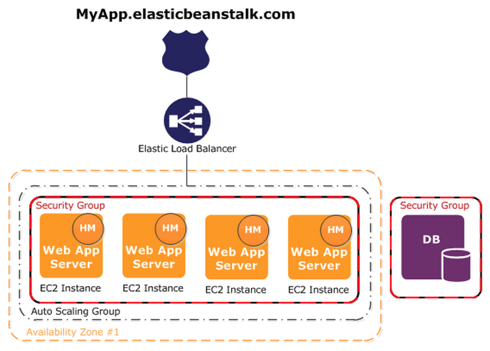

Updating a configuration secret:
# Update the config template.
$ rake upload_cookbook[something]
# Add variable to the EDB.
$ rake databag:secret_edit[production,webapp_whatever]
$ rake databag:secret_upload[production,webapp_whatever]
# Restart workers.
$ rake chef:client_run[*-app-2-not-app-*, production]
$ rake chef:client_run[*-app-not-app-2-*, production]
# Illegible log messages follow.Deploying:
$ grunt deploy:assets
# Update deploy hash. Commit to monolithic ops repo.
# Upload to hosted chef.
$ knife data bag from file webapp_darwin deploy.json
# Confirm you have the right nodes.
$ rake chef:query["*-site-rw-*",production]
# Confirm you have the right nodes.
$ rake chef:query["*-site-rw-*",production]Updating a configuration secret:
$ workon pn-processing
$ eb setenv API_KEY=secretDeploying:
$ eb deploy
# Boom.
A logical collection of Elastic Beanstalk components, conceptually similar to a folder.
A labeled zipped file of deployable code. Stored on S3 and labelled by the git commit hash.
A single application version that is deployed onto AWS resources, labeled by an environment name. For example, we typically have a Staging and a Production environment for each application.
A collection of settings and parameters that define how an environment behaves, including process environment variables.
Either a Web Server that handles HTTP requests, or a Worker that handles background processing tasks.
Every EB application comes with:


Depends on python. Run it in virtualenv.
$ eb -h
commands:
clone Clones an environment.
config Edits the environment configuration settings.
console Opens the environment in the AWS Elastic Beanstalk Management Console.
create Creates a new environment.
deploy Deploys your source code to the environment.
events Gets recent events.
init Initializes your directory with the EB CLI. Creates the application.
list Lists all environments.
logs Gets recent logs.
open Opens the application URL in a browser.
printenv Shows the environment variables.
scale Changes the number of running instances.
setenv Sets environment variables.
ssh Opens the SSH client to connect to an instance.
status Gets environment information and status.
terminate Terminates the environment.
use Sets default environment.Add a .config file in .ebextensions directory to:
Files are run in alpha order. For example, .ebextensions/01run.config is executed before .ebextensions/02do.config.
# Install packages from yum, rubygems, python, or rpm.
packages:
yum:
libmemcached: []
# Download an archive file and unpack it in target directory.
sources:
/etc/myapp: http://s3.amazonaws.com/mybucket/myobject
# Create files on the instance.
files:
"/home/ec2-user/myfile2" :
mode: "000755"
owner: root
group: root
content: |
# this is my file
# with contentUse the config module to manage configuration variables in development, test,
staging, production (based on NODE_ENV).
Use process environment variables for NODE_ENV and secrets.
$ eb setenv NODE_ENV=staging,API_KEY=secret
# Used in code as process.env.API_KEY